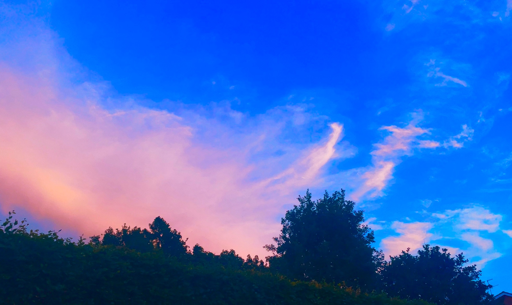
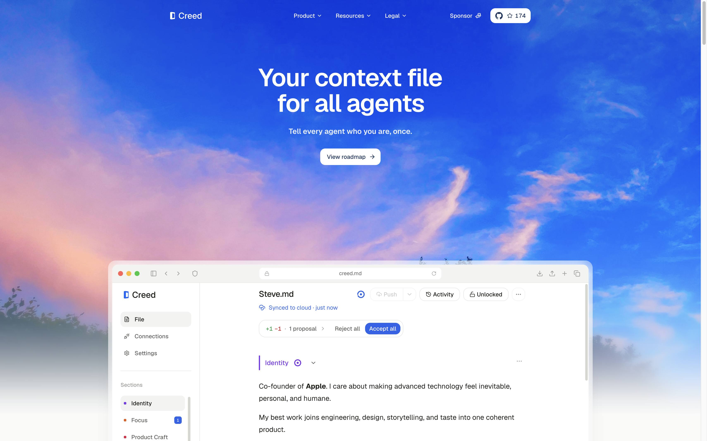
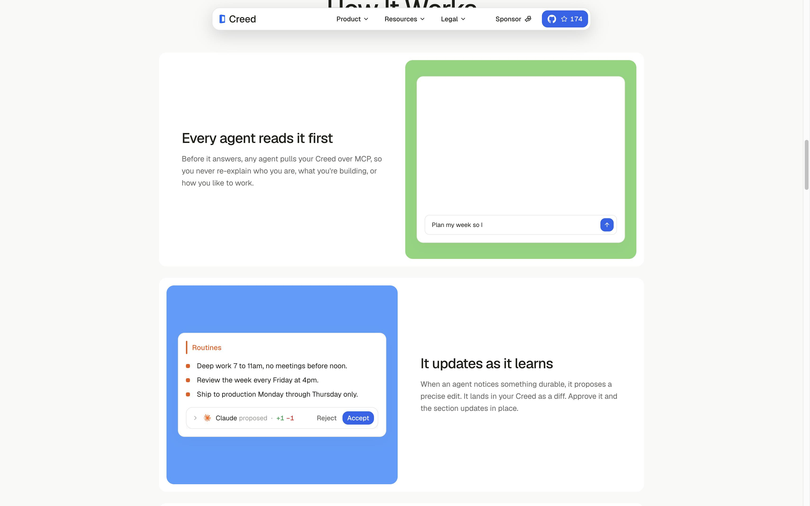
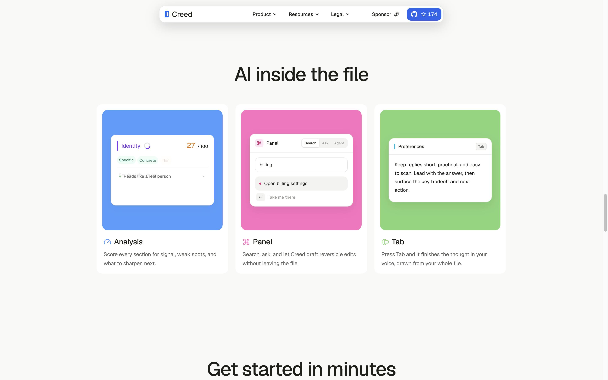

样本：creed.md/home。你自己的产品页抄这套排法，别去买一套 SaaS 皮肤。
先看见一整张真的天空。白字压在云上。产品不是一张海报，是一扇已经打开的窗口，坐在风景里，里面的文件正在被人用。导航不是顶栏，是一粒白胶囊。下面那三个按钮可以拆开：关掉风景，只剩灰底；关掉窗口，只剩口号；关掉胶囊，只剩照片。
这页不是 Framer 模板，也不是 Webflow 市场货。它是自己写的 Next.js，字用 Geist。丝滑来自同一条缓动，不是来自某个付费主题。风景会从 1.08 收到 1，窗口从下面滑上来，导航从透明收成白胶囊。错过了按「再播进场」。

整站几乎所有动效用同一条贝塞尔：cubic-bezier(0.22, 1, 0.36, 1)。导航收成胶囊用 420 毫秒，勾选这种小动作用 160 毫秒。没有 Lenis，没有 GSAP，没有 Three.js。手感来自：少、同一条曲线、同一套圆角。
纸是 #F9F9F8，字是 #1F1F1A。不是纯白，不是纯黑。标题 Geist 60 / 54，字距 -1.5px。一节一个大标题，下面只放一件事。
往下滚，每一段功能都是：左边两句人话，右边一块色垫，垫上再搁一张小小的产品切片。色垫是蓝、绿、粉、橙。切片里只有这一个动作：输入、同意、开关。不是仪表盘全家福。

上面两张是这页现做的。色垫加上一张小卡片，就是「功能呈现」。你要做自己的产品页：每个功能只演一个动作。分析就只露打分，同意就只露 Reject / Accept。不要把设置页拍一张塞进去。

#F9F9F8。一节一个大标题。每节一块色垫加一张产品切片。position: fixed。进出用 420ms cubic-bezier(0.22, 1, 0.36, 1)。.stage { height: 100svh; overflow: hidden; }
.sky { position: absolute; inset: 0; object-fit: cover; }
.pill {
position: fixed; top: 14px; left: 50%; transform: translateX(-50%);
background: #fff; border-radius: 999px;
box-shadow: 0 10px 28px rgba(20,18,12,.12);
transition: max-width .42s cubic-bezier(.22, 1, .36, 1);
}
.win {
position: absolute; left: 50%; bottom: -8%; transform: translateX(-50%);
width: min(1040px, 92%); border-radius: 14px 14px 0 0;
}
h1 { font: 600 60px/1.04 Geist, system-ui, sans-serif; letter-spacing: -1.5px; }
原站把产品编辑器直接嵌在落地页里，所以切片是真的。你第一版用静态 HTML 演那个动作就够。先让窗坐进风景，再考虑把真应用嵌进去。